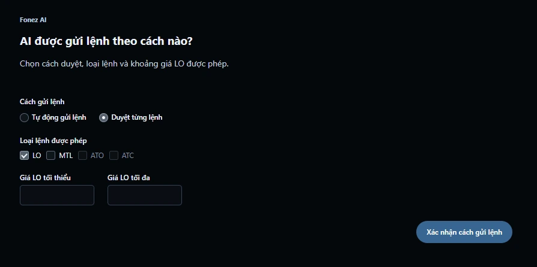
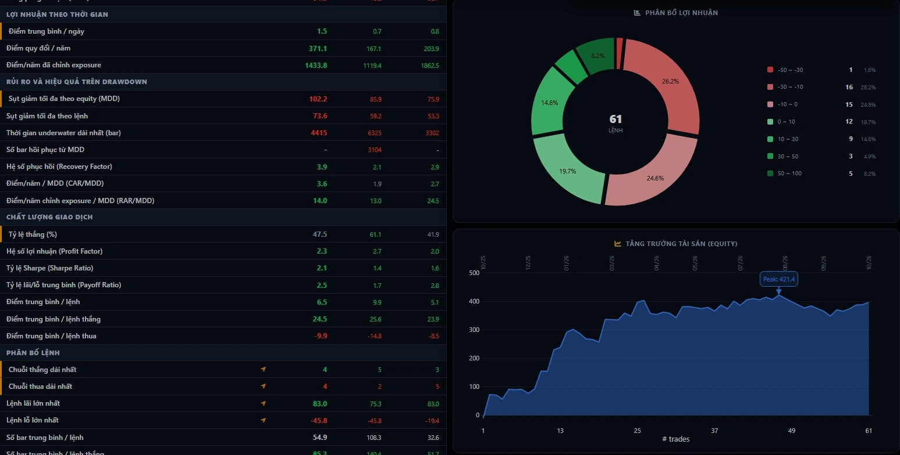
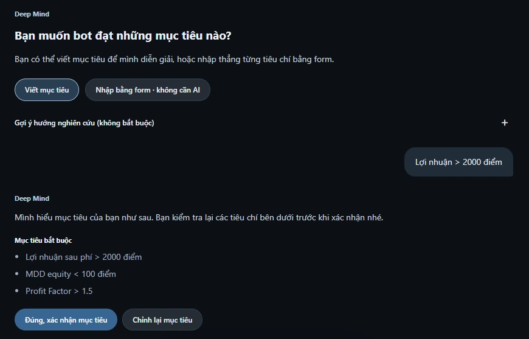
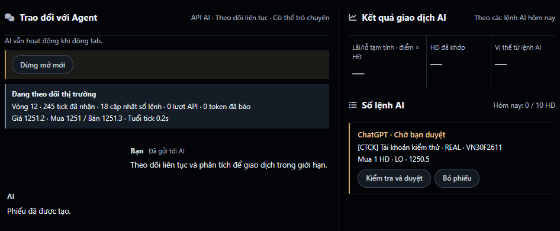

Phái sinh Việt Nam.
Giao dịch theo cách của bạn.





Một nền tảng cho ý tưởng
và phiên giao dịch của bạn.
Viết chiến lược bằng AFL ngay trong Fonez, không cần thông qua AmiBroker. Bạn cũng có thể sử dụng Python hoặc Pine Script (TradingView). Nếu chưa biết lập trình, chế độ Visual giúp bạn xây dựng chiến lược mà không cần viết code.
Từ tạo chiến lược, chạy backtest đến gửi lệnh trực tiếp tới công ty chứng khoán — tất cả đều trong cùng một ứng dụng.
- Dữ liệu thị trường miễn phí trọn đời
- Gửi lệnh trực tiếp chưa tới 1 giây
- Quản lý bot qua Telegram Control
Bot Trading
Chạy nhiều bot cùng lúc, mỗi bot dùng chiến lược và khung nến riêng. Từ giao dịch theo tín hiệu đến DCA và Grid, bạn chọn cách vận hành phù hợp với mình.
Xem thêm
Hand Trading
Bạn tự chọn điểm vào và điểm thoát. Đặt lệnh cho một hoặc nhiều tài khoản, theo dõi lệnh chờ và bảo vệ vị thế ngay trên bảng giao dịch.
Xem thêm
AI Trading
Nhờ AI theo dõi VN30F1M suốt phiên, đọc sổ lệnh và đề xuất cách giao dịch. Bạn chọn duyệt từng lệnh hoặc cho AI tự gửi trong giới hạn đã đặt.
Xem thêm
Backtest
Ý tưởng của bạn sẽ hoạt động thế nào trên thị trường? Chạy thử trên dữ liệu lịch sử, xem từng giao dịch và tìm hiểu điều gì xảy ra khi kết hợp nhiều bot.
Xem thêm
AI Research
“Nếu thoát lệnh sớm hơn, bot có giảm lỗ không?” Deep Mind đề xuất cách thử, Fonez chạy backtest để bạn so sánh với bot gốc và chọn phương án muốn giữ.
Xem thêm
AmiBroker Plugin
Giữ bot AFL trên biểu đồ AmiBroker quen thuộc. Fonez nhận tín hiệu từ biểu đồ trên cùng máy và chuyển lệnh theo khối lượng bạn chọn cho từng tài khoản.
Xem thêm
Telegram Control
Theo dõi Fonez ngay trên điện thoại. Xem tài khoản và vị thế, đặt lệnh tay, quản lý bot hay hẹn giờ vận hành — tất cả ngay trong Telegram.
Xem thêmCông ty chứng khoán
Đặt lệnh bằng tài khoản bạn đang dùng. Nhận dữ liệu giá VN30F1M từ DNSE hoặc SSI FastConnect.
Xem thêm- DNSE
- SSI
- TCBS
- VPBS
Chạy trên máy của bạn.
Kết nối theo cách bạn muốn.
Chạy bot và backtest trên máy tính cá nhân hoặc máy chủ riêng. Làm việc cùng trợ lý AI, theo dõi vị thế và điều khiển bot qua Telegram.
Xem thêmChương trình Affiliate
Chia sẻ Fonez.
Nhận hoa hồng.
Gửi mã của bạn cho người muốn dùng Fonez. Khi họ mua Realtime hoặc credit AI, bạn nhận hoa hồng theo chính sách giới thiệu.
Người nhập mã hợp lệ khi đăng ký được tặng thêm 7 ngày Realtime.
Xem thêm- Đơn Realtime đầu tiên đủ điều kiệnSố tiền thực nhận từ 100.000đ
- 30%
- Các đơn sau hoặc credit AIHoa hồng khi giới thiệu trực tiếp
- 10%
- Giới thiệu ở cấp thứ haiKhi người bạn giới thiệu tiếp tục giới thiệu người khác
- 5%
Bắt đầu cùng Fonez.
Tải ứng dụng hoặc nhắn qua Zalo để được hướng dẫn cài đặt, kết nối tài khoản và thiết lập bot.